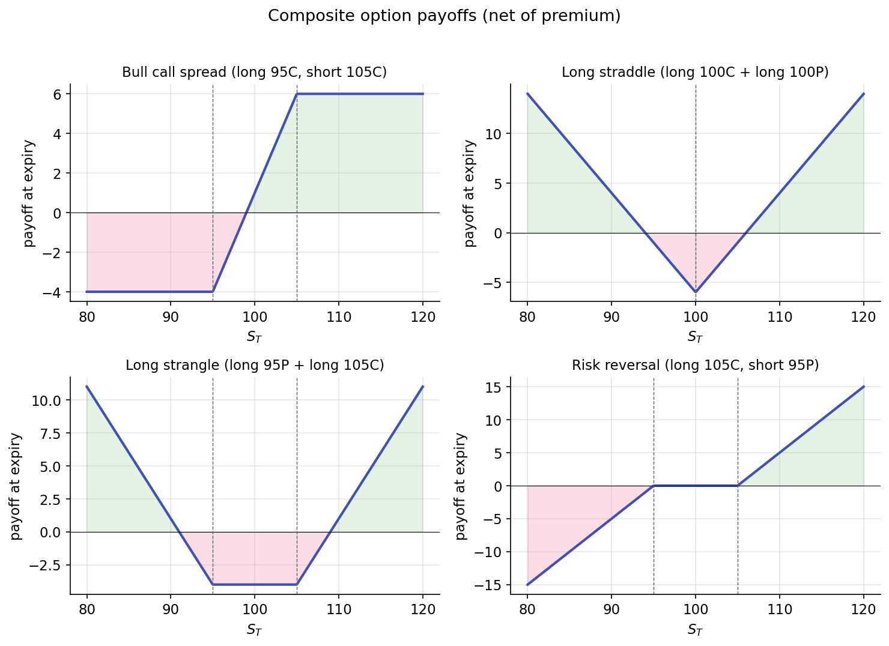

Payoffs and put-call parity¶
Four atomic payoffs (long call, long put, short call, short put) compose into every structure on the options chain. Most of what looks complicated in an options trader's positions is a sum and difference of hockey sticks. Once you can read the diagram, you can read the trade.
And one equation — put-call parity — glues all of it together. It relates the prices of calls, puts, the underlying, and cash in a way that must hold, regardless of any pricing model, or arbitrage exists.
Reading the hockey sticks¶
Start with the four single-leg payoffs from the previous lesson. At expiry, as a function of terminal price \(S_T\):
- Long call: \(\max(S_T - K, 0) - c\) (subtract premium paid)
- Long put: \(\max(K - S_T, 0) - p\)
- Short call: \(c - \max(S_T - K, 0)\) (collect premium, owe payoff)
- Short put: \(p - \max(K - S_T, 0)\)
Now combine. Every combination payoff is a linear sum of these four shapes. Adding payoff diagrams graphically is the fastest way to see what a position does.
Bull call spread (long \(K_1\) call + short \(K_2\) call, \(K_1 < K_2\))¶
Evaluate piecewise:
| \(S_T\) region | Payoff |
|---|---|
| \(S_T \le K_1\) | \(0\) |
| \(K_1 < S_T < K_2\) | \(S_T - K_1\) |
| \(S_T \ge K_2\) | \(K_2 - K_1\) |
A capped bullish position. Maximum profit is \(K_2 - K_1\) minus net premium paid, reached if \(S_T \ge K_2\). Maximum loss is the net premium. The trade: you give up the unlimited upside of a naked long call in exchange for cheaper entry.
Long straddle (long \(K\) call + long \(K\) put)¶
A V-shape centered at \(K\). The position is profitable when \(|S_T - K|\) exceeds the combined premium paid. Long straddles are long volatility bets — you don't care which direction, only that the move is big enough. You are buying convexity.
Long strangle (long \(K_1\) put + long \(K_2\) call, \(K_1 < K_2\))¶
Same intuition as a straddle, but with wider strikes. Cheaper (both legs are OTM when \(S_0 \in (K_1, K_2)\)) but requires a bigger move. You pay less for less sensitivity to small moves, in exchange for a wider "dead zone" around the current price.
Risk reversal (long \(K_\text{high}\) call + short \(K_\text{low}\) put)¶
A payoff that slopes upward through the entire price range — effectively synthetic long exposure, minus the middle. Traders use risk reversals to express directional views while capturing skew: on equity indices, the call premium is usually cheaper than the put premium at equidistant deltas (because skew makes OTM puts expensive), so a long call / short put risk reversal is often close to zero net premium. The equivalent stock position has the same expected P&L but ties up more capital.
All four together:

These are a starting set. Butterflies, iron condors, calendar spreads, diagonals — all compose from the same four atoms. If you can graph long call and short call, you can graph anything.
Put-call parity — the model-free equation¶
Now the equation. It says: the prices of a call and a put struck at the same \(K\) and expiring at the same \(T\) are not free parameters. They are linked to the underlying's price and to the cost of cash.
Here \(C\) is the call price, \(P\) the put price, \(S\) the current underlying price, \(r\) the risk-free rate, and \(T\) the time to expiry. \(K e^{-rT}\) is the present value of the strike (cash discounted at the risk-free rate).
Two things to note before the derivation:
- This is not Black-Scholes. It does not assume GBM, log-normality, constant volatility, or any particular model of how \(S\) evolves. It assumes only that arbitrage opportunities are eliminated by traders.
- It holds for European options. American options can deviate slightly because of early exercise, but the deviation is usually tiny for non-dividend-paying stocks.
Derivation by no-arbitrage¶
Consider two portfolios at time \(t = 0\):
- Portfolio A: long one call + short one put, both at strike \(K\) and expiry \(T\). Net price today: \(C - P\).
- Portfolio B: long one unit of the underlying + short \(K e^{-rT}\) dollars of cash (i.e., borrow \(K e^{-rT}\) at rate \(r\), repay \(K\) at \(T\)). Net price today: \(S - K e^{-rT}\).
At expiry, evaluate each portfolio:
Portfolio A at \(T\): The call pays \(\max(S_T - K, 0)\); the short put pays \(-\max(K - S_T, 0)\). Their sum is:
| \(S_T\) region | Call pays | Short put pays | Sum |
|---|---|---|---|
| \(S_T > K\) | \(S_T - K\) | \(0\) | \(S_T - K\) |
| \(S_T < K\) | \(0\) | \(-(K - S_T) = S_T - K\) | \(S_T - K\) |
| \(S_T = K\) | \(0\) | \(0\) | \(0 = S_T - K\) |
Portfolio A pays exactly \(S_T - K\) at expiry, for every \(S_T\).
Portfolio B at \(T\): The underlying is worth \(S_T\); the borrowed cash is repaid at \(K\). Net: \(S_T - K\).
Both portfolios pay the same amount at every terminal state. If they paid the same at every state and had different prices today, you could short the expensive one, buy the cheap one, and lock in a riskless profit. No-arbitrage demands equal prices today:
That's the entire derivation. No distributional assumption, no hedging argument, no stochastic calculus. Two portfolios with identical payoffs must have identical prices.
What parity gives you¶
Synthetic positions¶
Rearranging parity, you can synthesize any one of the four instruments from the other three:
A long call + short put + cash of \(K e^{-rT}\) is the same economic exposure as a long stock position — same P&L in every state. This is how prop desks replicate stock exposure with options when capital efficiency or margin rules favor it.
Similarly:
A call is synthetically replicated by a put plus stock minus cash; a put by a call minus stock plus cash. If you only quote calls, you still know what puts must cost.
A model-free sanity check¶
When a put-call-parity violation shows up in real data, one of three things is happening:
- Your data is wrong (stale prices, one side from close, the other from last trade).
- There are frictions not in the equation (hard-to-borrow fees for shorting the stock, early-exercise premium on American options, dividends not accounted for).
- It's a genuine arbitrage — rare, fleeting, and immediately arbed out by market makers.
In practice, running the parity equation across your data catches more data bugs than arbitrage opportunities. Use it as a debugging tool as much as a trading one.
Dividends¶
If the underlying pays a dividend \(D\) with present value \(D_0 = \sum_i d_i e^{-r t_i}\) before expiry, parity shifts to:
The long-stock portfolio collects dividends over the contract's life; the call-plus-put synthetic does not. Subtracting the present value of dividends corrects for that flow.
What you can now reason about¶
- Why options positions decompose into sums of hockey sticks — and how to read any strategy diagram by inspection.
- How to synthesize a long stock position from a call, a put, and cash — and why a prop desk might prefer the synthetic.
- The model-free status of put-call parity, and why you should run it as a sanity check on any options dataset you touch.
Implemented at¶
Put-call parity is not an algorithm in the trading project — it's an invariant. If you read a chain from trading/packages/gex/src/gex/data/options.py (the YFinanceChainSource or PolygonChainSource), you can compute \(C - P - S + K e^{-rT}\) for each strike and confirm it's approximately zero. When it isn't, you have a data issue, not a signal. Sensible first-check in any gex-pipeline debugging session.